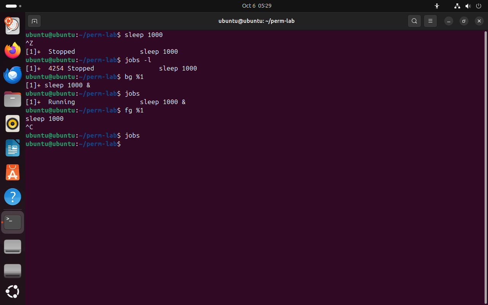

Часть 4 из 7
Передний план и фон: jobs, bg, fg
В этой части разберём, что такое задание оболочки, чем передний план отличается от фона и как переводить задание между ними клавишами и командами jobs, bg и fg.
4.1 Задания оболочки
Каждая команда, запущенная из оболочки, становится заданием (job). Задание на переднем плане занимает терминал: ввод с клавиатуры получает оно, а оболочка ждёт его завершения и не принимает новых команд. Задание в фоне работает само по себе, а терминал свободен для следующих команд.
Передний план похож на разговор по телефону: пока он идёт, вы не можете начать второй. Фон — это стиральная машина: запустили, и она работает, пока вы заняты другим. Остановка Ctrl+Z — кнопка «пауза» на этой машине: работа не потеряна, её можно продолжить.
| Действие | Как | Что происходит |
|---|---|---|
| запустить в фоне | команда & | задание работает, терминал свободен |
| остановить задание переднего плана | Ctrl+Z | задание в состоянии T, терминал возвращается оболочке |
| список заданий | jobs, jobs -l | номера, состояние, с -l — ещё и PID |
| продолжить в фоне | bg %1 | остановленное задание продолжает работу в фоне |
| вернуть на передний план | fg %1 | задание снова занимает терминал |
| прервать задание переднего плана | Ctrl+C | задание получает сигнал прерывания и обычно завершается |
В выводе jobs знак + отмечает текущее задание — то, к которому относятся fg и bg без номера, а - — предыдущее. Задание, запущенное в фоне, всё ещё связано с терминалом: если оно попытается прочитать ввод с клавиатуры, оболочка остановит его.
sleep 1000# задание переднего планачто делает
Что делает команда. Запускает sleep на переднем плане.
По частям:
sleep- ничего не делать указанное число секунд
1000- сколько секунд
^Z# Ctrl+Z: остановитьjobs -l# номер, PID и состояниечто делает
Что делает команда. Выводит задания оболочки с PID и состоянием.
По частям:
jobs- встроенная команда оболочки: вывести задания
-l- добавить PID каждого задания
bg %1# продолжить в фонечто делает
Что делает команда. Продолжает остановленное задание 1 в фоне.
По частям:
bg- встроенная команда оболочки: продолжить задание в фоне
%1- какое задание, задание номер 1
jobsчто делает
Что делает команда. Выводит задания оболочки и их состояние.
По частям:
jobs- встроенная команда оболочки: вывести задания
fg %1# вернуть на передний планчто делает
Что делает команда. Возвращает задание 1 на передний план: оно снова занимает терминал.
По частям:
fg- встроенная команда оболочки: вернуть задание на передний план
%1- какое задание, задание номер 1
^C# Ctrl+C: прерватьjobs# заданий не осталосьчто делает
Что делает команда. Выводит задания оболочки и их состояние.
По частям:
jobs- встроенная команда оболочки: вывести задания
- 1Ctrl+Z: задание 1 остановлено
- 2jobs -l: PID и состояние Stopped
- 3bg: задание продолжает работу в фоне
- 4jobs: Running
- 5fg вернул sleep в терминал, Ctrl+C прервал его


Весь снимок ↗Задание sleep 1000: остановка, продолжение в фоне, возврат и прерывание.
Что показывает снимок. Ctrl+Z остановил задание 1, bg продолжил его в фоне со знаком &, fg вернул на передний план, Ctrl+C прервал; после этого заданий не осталось.
Где это пригодится. Долгую команду, запущенную без &, не нужно прерывать: Ctrl+Z и bg отправляют её в фон, и терминал освобождается.
Итоги части 4
- Задание на переднем плане занимает терминал;
&запускает задание в фоне. - Ctrl+Z останавливает задание,
bg %Nпродолжает его в фоне,fg %Nвозвращает на передний план. jobs -lвыводит номера заданий, PID и состояние;+— текущее задание.- Ctrl+C прерывает задание переднего плана.
В отчётСнимок jobs с остановленным и продолженным заданием.